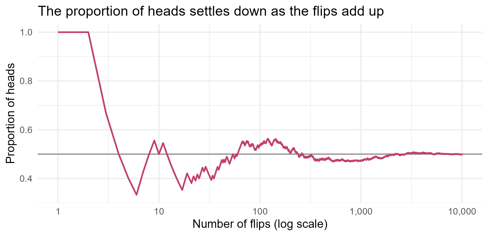
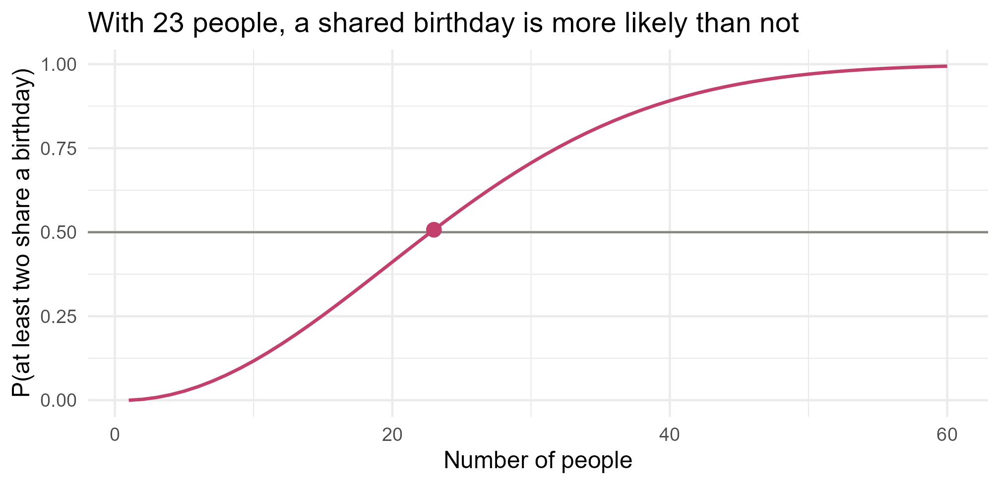

Module 0 · Lesson 8 of 14 Week 8 of 160 About 5–7 hours
Probability
The mathematics of uncertainty, checked by simulation
Use sample spaces, events and the rules of probability; compute conditional probabilities; reason about independence and reliability; apply Bayes’ theorem; count outcomes; and estimate probabilities by simulation.
Every batch could have come out a little differently. Run the same reactor twice and you get two different yields; test the same sample twice and you get two slightly different readings. Probability is the mathematics of that uncertainty. It tells you which outcomes to expect, and how surprised to be by the ones you see. It’s also where intuition fails most often, so in this lesson you’ll check every rule with R by simulating: running a random experiment thousands of times, and counting.
Engineers use probability every day, even when they don’t call it that. How likely is a pump to fail this month? How much should you trust an alarm? How many backup systems do you need? By the end of this lesson, you’ll be able to answer all three.
In this lesson you’ll:
- see what a probability means, and estimate one by simulation
- use the basic rules of probability
- compute conditional probabilities from real data
- work out the reliability of systems with backups
- use Bayes’ theorem to decide how much to trust an alarm
- count outcomes
What is a probability?
The probability of an event is the proportion of times it would happen if you repeated the random process over and over. A fair coin lands heads with probability 0.5: not in every set of ten flips, but in the long run.
R can flip coins for you. sample(x, size, replace = TRUE) draws size values at random from x:
set.seed(2026)
sample(c("H", "T"), size = 10, replace = TRUE)
#> [1] "H" "H" "H" "T" "H" "H" "H" "T" "T" "T"set.seed() fixes R’s random number generator, so you get the same “random” results every time you run the code. Use it whenever results need to be reproducible. Leave it out, and every run is different.
Flip a lot more coins, and the proportion of heads settles down:
flips <- sample(c("H", "T"), size = 10000, replace = TRUE)
mean(flips == "H")
#> [1] 0.499Show the code
running <- data.frame(flip = 1:10000, proportion = cumsum(flips == "H") / (1:10000))
ggplot(running, aes(x = flip, y = proportion)) +
geom_hline(yintercept = 0.5, color = "#898781") +
geom_line(color = "#C2416C", linewidth = 0.8) +
scale_x_log10(labels = scales::label_comma()) +
labs(title = "The proportion of heads settles down as the flips add up",
x = "Number of flips (log scale)", y = "Proportion of heads") +
theme_minimal(base_size = 12)
At first the proportion jumps around a lot; after thousands of flips, it hugs 0.5. That’s the law of large numbers, which Lesson 11 makes precise. It’s also why simulation works: repeat an experiment enough times, and the proportion of times an event happens estimates its probability.
Probability can also describe a degree of belief, as in “I’m 70% sure this catalyst is better”. That interpretation is the basis of Bayesian statistics, in Module 5.
Sample spaces and events
The sample space S is the set of all possible outcomes of a random process. An event is a collection of outcomes. When all the outcomes are equally likely,
P(A) = \frac{\text{number of outcomes in } A}{\text{number of outcomes in } S} .
Rolling two dice has 36 equally likely outcomes. expand.grid() lists every combination as a data frame:
dice <- expand.grid(die1 = 1:6, die2 = 1:6)
nrow(dice)
#> [1] 36
head(dice)
#> die1 die2
#> 1 1 1
#> 2 2 1
#> 3 3 1
#> 4 4 1
#> 5 5 1
#> 6 6 1
mean(dice$die1 + dice$die2 == 7)
#> [1] 0.1666667Six of the 36 outcomes add up to 7, so P(\text{total} = 7) = 6/36 = 1/6. Using mean() on a TRUE/FALSE vector gives the proportion of TRUEs, which is exactly the formula above.
Three ways of combining events have their own notation:
| Notation | Meaning | In R |
|---|---|---|
| A^c | not A (the complement) | !A |
| A \cup B | A or B (or both) | A | B |
| A \cap B | A and B | A & B |
The rules of probability
Every probability is between 0 (impossible) and 1 (certain), and the probabilities of all the outcomes in S add up to 1. Two more rules do most of the work.
The complement rule. The probability that A doesn’t happen is
P(A^c) = 1 - P(A) .
It’s often easier to work out the opposite of what you want. A plant has 4 pumps, and each has a 5% chance of failing this month, independently of the others. What’s the chance that at least one fails? “At least one” covers lots of cases, but its complement, “none fail”, is just one case: all four keep running, each with probability 0.95.
1 - 0.95^4
#> [1] 0.1854938About 19%, nearly four times the risk for a single pump. (Multiplying the 0.95s uses independence, coming up soon.)
The addition rule. The probability that A or B happens is
P(A \cup B) = P(A) + P(B) - P(A \cap B) .
You subtract P(A \cap B) because the outcomes in both events would otherwise be counted twice. If A and B can’t happen together, they’re disjoint (or mutually exclusive), P(A \cap B) = 0, and the probabilities simply add.
high <- dice$die1 + dice$die2 >= 10
doubles <- dice$die1 == dice$die2
mean(high) + mean(doubles) - mean(high & doubles)
#> [1] 0.2777778
mean(high | doubles)
#> [1] 0.2777778Both give 10/36. The rolls (5, 5) and (6, 6) are high and doubles, and subtracting stops them from being counted twice.
Your turn. A plant runs 10 identical reactors. Each one has a 3% chance of an unplanned shutdown on any given day, independently of the others. What’s the probability of at least one shutdown today?
The complement of “at least one shutdown” is “no shutdowns”: all 10 reactors keep running, each with probability 0.97.
1 - 0.97^10About 0.26. A 3% risk per reactor becomes a 26% chance that something stops today.
Now check it by simulation. runif(10) draws 10 random numbers between 0 and 1, so runif(10) < 0.03 is TRUE for each reactor that shuts down. replicate() repeats a whole day 10,000 times. Estimate the probability.
days is a TRUE/FALSE vector, TRUE for each day with at least one shutdown. Its mean is the proportion of such days.
set.seed(42)
days <- replicate(10000, any(runif(10) < 0.03))
mean(days)Conditional probability
Probabilities change when you learn something. The conditional probability of A given B is the probability of A once you know that B has happened:
P(A \mid B) = \frac{P(A \cap B)}{P(B)} .
In words: look only at the outcomes in B, and ask what fraction of them are also in A. Two-way tables make this concrete. Here are the batches, sorted by whether they ran hotter than 185 °C, and whether they were on spec:
tab <- table(hot = batches$temp_C > 185, on_spec = batches$on_spec)
addmargins(tab)
#> on_spec
#> hot FALSE TRUE Sum
#> FALSE 1 25 26
#> TRUE 8 4 12
#> Sum 9 29 38(The two batches with no temperature are left out, so there are 38.) Now read off conditional probabilities:
4 / 12 # P(on spec | hot): look only at the 12 hot batches
#> [1] 0.3333333
25 / 26 # P(on spec | not hot)
#> [1] 0.9615385
29 / 38 # P(on spec), ignoring temperature
#> [1] 0.7631579Knowing that a batch ran hot changes its on-spec chance from 76% to 33%. That’s what conditional probability captures.
Be careful: P(A \mid B) and P(B \mid A) are different things. P(\text{off spec} \mid \text{hot}) = 8/12 \approx 0.67, but P(\text{hot} \mid \text{off spec}) = 8/9 \approx 0.89. Mixing the two up is a classic mistake. It’s sometimes called the prosecutor’s fallacy, because of the courtroom mistakes it has caused.
Rearranging the definition gives the multiplication rule: P(A \cap B) = P(A \mid B)\,P(B).
Your turn. What’s the probability that a batch used catalyst B, given that it was on spec? Then the next exercise asks it the other way round.
Look only at the on-spec batches, batches$catalyst[batches$on_spec], then find the proportion that are "B".
mean(batches$catalyst[batches$on_spec] == "B")10 of the 31 on-spec batches used catalyst B: about 0.32.
And the other way round. What’s the probability that a batch was on spec, given that it used catalyst B?
Look only at the catalyst B batches, batches$on_spec[batches$catalyst == "B"], then take the mean.
mean(batches$on_spec[batches$catalyst == "B"])10 of the 12 catalyst B batches: about 0.83, very different from 0.32!
One more. What’s the probability that a batch ran on the night shift or used catalyst B (or both)?
Combine the two conditions with | and take the mean. Or use P(A) + P(B) - P(A \cap B).
mean(batches$shift == "night" | batches$catalyst == "B")Independence and reliability
Two events are independent if knowing that one happened doesn’t change the probability of the other:
P(A \mid B) = P(A), \quad \text{or equivalently} \quad P(A \cap B) = P(A)\,P(B) .
The two dice are independent: the first die doesn’t affect the second, so the probability of double sixes is \frac16 \times \frac16 = \frac{1}{36}. Temperature and on-spec are clearly not independent in our batches: 33% of the hot batches were on spec, against 76% overall.
Don’t confuse independent with disjoint. Disjoint events can’t happen together, so if one happens, the other certainly didn’t. Knowing one tells you a lot about the other, so disjoint events (with nonzero probabilities) are always dependent.
Systems in series and in parallel
Independence is the heart of reliability engineering. A process line where a feed pump, a reactor and a separator must all work is a series system. It only works if every part works, so you multiply:
0.95 * 0.98 * 0.97 # pump, reactor, separator
#> [1] 0.90307Three reliable parts make a line that works only about 90% of the time. A parallel system has backups: it works if at least one part works. Two pumps that are each 90% reliable, where either one is enough, fail only if both fail:
1 - 0.10^2
#> [1] 0.99That’s 99%. Redundancy is why safety-critical equipment comes in pairs.
WarningAssuming independence can be dangerous
Two backup pumps on the same power supply aren’t independent: one power cut takes out both. Two pressure sensors calibrated with the same faulty reference will be wrong together. Engineers call these common-cause failures, and they’re why real systems fail more often than the multiplication rule promises. If each sensor fails 1% of the time, independence says both fail together only 0.01% of the time. With a shared cause, the true figure can be a hundred times higher.
Your turn. A cooling system has three identical pumps in parallel, and it keeps working as long as at least one pump runs. Each pump is 85% reliable, independently of the others. What’s the probability that the cooling works?
The cooling fails only if all three pumps fail, and each fails with probability 0.15. Use the complement.
1 - 0.15^3About 99.7%: three so-so pumps make a very reliable system.
Bayes’ theorem: should you trust the alarm?
A gas detector sounds for 95% of real leaks. It also gives a false alarm on 5% of the days when there’s no leak. On any given day, there’s a 1% chance of a real leak. The alarm goes off. How likely is it that there’s really a leak?
Most people guess about 95%. Let’s count it out over 10,000 days:
- On 100 of them there’s a leak, and the alarm sounds on 95 of those.
- On the other 9,900 there’s no leak, and 5% of them, 495 days, have a false alarm.
- So the alarm sounds on 95 + 495 = 590 days, and only 95 of those are real leaks.
P(\text{leak} \mid \text{alarm}) = \frac{95}{590} \approx 0.16 .
Only 16%! Because real leaks are rare, false alarms from the huge number of normal days swamp the real ones. Ignoring how common something is to begin with is called the base-rate fallacy.
So should operators ignore the alarm? Absolutely not! Probability tells you how likely a leak is. The consequences tell you what to do. Checking a false alarm costs a few minutes; missing a real leak can cost lives. Good engineering decisions need both.
The general version is Bayes’ theorem:
P(L \mid A) = \frac{P(A \mid L)\,P(L)}{P(A \mid L)\,P(L) + P(A \mid L^c)\,P(L^c)} .
p_leak <- 0.01 # P(L), the base rate
detect <- 0.95 # P(A | L)
false_alarm <- 0.05 # P(A | no leak)
detect * p_leak / (detect * p_leak + false_alarm * (1 - p_leak))
#> [1] 0.1610169A simulation of 100,000 days agrees:
set.seed(1)
n <- 100000
leak <- runif(n) < p_leak
alarm <- ifelse(leak, runif(n) < detect, runif(n) < false_alarm)
mean(leak[alarm]) # among the alarm days, the proportion with a real leak
#> [1] 0.1617421
NoteGo deeper: deriving Bayes’ theorem
Write the definition of conditional probability both ways round: P(L \cap A) = P(L \mid A)\,P(A) and P(L \cap A) = P(A \mid L)\,P(L). Setting them equal and dividing by P(A):
P(L \mid A) = \frac{P(A \mid L)\,P(L)}{P(A)} .
The denominator comes from the law of total probability: an alarm happens either with a leak or without one, two disjoint cases, so P(A) = P(A \mid L)P(L) + P(A \mid L^c)P(L^c). Bayes’ theorem turns P(\text{evidence} \mid \text{cause}), which is often easy to measure, into P(\text{cause} \mid \text{evidence}), which is what you actually want to know. Module 5 builds a whole approach to statistics on it.
Your turn. A lab test screens batches for a contaminant. 2% of batches are contaminated. The test catches 90% of contaminated batches, and wrongly flags 5% of clean ones. A batch is flagged. What’s the probability it’s really contaminated?
The numerator is the true flags: catch * p_contam. The denominator adds the false ones: false_flag * (1 - p_contam).
p_contam <- 0.02
catch <- 0.90
false_flag <- 0.05
catch * p_contam / (catch * p_contam + false_flag * (1 - p_contam))About 0.27. Out of 10,000 batches, 180 of the 200 contaminated ones get flagged, and so do 490 of the 9,800 clean ones: 180 / 670.
Counting
When outcomes are equally likely, working out probabilities means counting. Two tools cover most cases:
- Factorials. n! = n \times (n-1) \times \cdots \times 1 is the number of ways to put n things in order. Five samples can be queued for the analyzer in 5! = 120 ways.
- Combinations. \binom{n}{k} = \frac{n!}{k!\,(n-k)!}, read “n choose k”, is the number of ways to choose k things from n, when the order doesn’t matter.
factorial(5)
#> [1] 120
choose(10, 3) # ways to pick 3 of 10 candidate solvents to test
#> [1] 120
choose(40, 5) # ways to pick 5 of our 40 batches for an audit
#> [1] 658008Here’s a famous surprise: in a group of just 23 people, the chance that at least two of them share a birthday is over 50%. Use the complement. For no shared birthday, the second person must avoid one date, the third two dates, and so on (ignoring leap years):
1 - prod((365:343) / 365)
#> [1] 0.5072972Show the code
p_shared <- sapply(1:60, function(n) 1 - prod((365:(365 - n + 1)) / 365))
ggplot(data.frame(n = 1:60, p = p_shared), aes(x = n, y = p)) +
geom_hline(yintercept = 0.5, color = "#898781") +
geom_line(color = "#C2416C", linewidth = 0.8) +
geom_point(data = data.frame(n = 23, p = p_shared[23]), size = 3, color = "#C2416C") +
labs(title = "With 23 people, a shared birthday is more likely than not",
x = "Number of people", y = "P(at least two share a birthday)") +
theme_minimal(base_size = 12)
Your turn. In a lab group of 30 people, what’s the probability that at least two share a birthday?
Adapt 1 - prod((365:343) / 365), which was for 23 people. For 30 people, the last factor is 336/365.
1 - prod((365:336) / 365)About 71%: in most groups of 30, two people share a birthday.
Simulation: when the math gets hard
Many probabilities are hard to work out exactly, but easy to simulate. replicate(n, expression) repeats a random experiment n times and collects the results. Here’s the birthday problem by brute force:
set.seed(3)
shared <- replicate(10000, any(duplicated(sample(1:365, 23, replace = TRUE))))
mean(shared)
#> [1] 0.5057duplicated() marks values that already appeared earlier in a vector, and any() asks whether any of them is TRUE. The simulation lands close to the exact 0.507. More repetitions give a more accurate estimate, and Lesson 11 shows exactly how the accuracy grows. Simulation is one of the most useful tools you’ll ever learn, and Module 4 is largely about it.
Challenge round
Challenge 1 · Two out of three. A reactor’s emergency shutdown uses three temperature sensors and “votes”: it trips if at least two of the three detect an overheat. Each sensor detects it with probability 0.95, independently. Complete the simulation to estimate the probability that the system trips.
sum(detected) counts the sensors that detected the overheat. The system trips if that count is at least 2.
set.seed(7)
trips <- replicate(10000, {
detected <- runif(3) < 0.95
sum(detected) >= 2
})
mean(trips)About 0.993. The exact answer is 3(0.95)^2(0.05) + 0.95^3 = 0.99275: exactly two sensors detect, or all three do. Voting systems are popular in process safety because they’re reliable and they don’t trip just because one sensor misbehaves.
Challenge 2 · The Monty Hall problem. On a game show, a prize is behind one of three doors, and goats are behind the other two. You pick a door. The host, who knows where the prize is, opens one of the other doors to reveal a goat, and offers to let you switch. Should you? Complete the simulation so that play() returns TRUE when switching wins.
After switching, you win if the door you switched to is the one with the prize.
set.seed(1)
play <- function() {
prize <- sample(1:3, 1)
pick <- sample(1:3, 1)
goats <- setdiff(1:3, c(prize, pick))
opened <- if (length(goats) == 1) goats else sample(goats, 1)
switched <- setdiff(1:3, c(pick, opened))
switched == prize
}
mean(replicate(10000, play()))Switching wins about two-thirds of the time! Your first pick is right only 1/3 of the time. In the other 2/3, the host is forced to leave the prize behind the door you switch to. (The if is needed because sample(x, 1) with a single number x samples from 1:x, a well-known R trap.)
Quick quiz
1. P(A) = 0.3. What is P(\text{not } A)?
By the complement rule, P(A^c) = 1 - P(A) = 0.7.
2. A and B are disjoint, with P(A) = 0.2 and P(B) = 0.5. What is P(A \text{ or } B)?
Disjoint events can’t happen together, so P(A \cap B) = 0 and the probabilities simply add.
3. Two independent pumps are each 90% reliable. What’s the chance that both work?
For independent events, P(A \cap B) = P(A)\,P(B) = 0.9 \times 0.9. (0.99 is the chance that at least one works.)
4. Of the 12 hot batches, 8 were off spec. What does 8/12 estimate?
You looked only at the hot batches and asked what fraction were off spec: a conditional probability, given hot.
5. An alarm catches 99% of real faults. It goes off. What’s most likely true?
With a low base rate, false alarms from the many normal days can outnumber the real ones. You need the base rate and the false-alarm rate to say more.
6. Why use set.seed() before a simulation?
With the same seed, R generates the same sequence of random numbers, so you (and anyone else) get identical results.
Wrap-up
You’ve just learned to reason about uncertainty. Here’s what you can do now:
- Think long-run: a probability is a long-run proportion, and simulating many times estimates it.
- Use the rules: complement P(A^c) = 1 - P(A), and addition P(A \cup B) = P(A) + P(B) - P(A \cap B).
- Condition: P(A \mid B) = P(A \cap B) / P(B), which is not the same as P(B \mid A)!
- Design for reliability: multiply for systems in series, use the complement for backups in parallel, and watch out for common causes.
- Trust alarms wisely: Bayes’ theorem reverses a conditional probability, and the base rate matters enormously.
- Count: n! counts orderings, \binom{n}{k} counts selections, and
set.seed()makes simulations reproducible.
TipPractice in RStudio (optional, about an hour)
Work in week08.R.
- Plot the birthday problem. Compute the exact probability of a shared birthday for groups of 1 to 80 people with
sapply(). Add simulated estimates for groups of 10, 20, …, 80, and plot both on one chart. How many people make a shared birthday 99% likely? - Alarms and base rates. Write a function
p_real(base_rate, detect, false_alarm). Plot P(\text{real} \mid \text{alarm}) against base rates from 0.001 to 0.5, for a detector with 95% detection and 5% false alarms. At what base rate does an alarm first mean “more likely real than not”? - Design a system. A plant needs cooling that’s at least 99.9% reliable, and each pump is 80% reliable. How many pumps in parallel do you need? Answer with a
whileloop, then check it by simulation. - Monty Hall with more doors. Extend the simulation to 10 doors, where the host opens 8 goat doors and you can switch to the last closed one. What’s the chance switching wins? Explain why in a comment.
NoteKey words from this lesson
- Sample space
- The set of all possible outcomes of a random process.
- Event
- A collection of outcomes, such as “the dice total 7”.
- Complement
- The event that A doesn’t happen, written A^c.
- Disjoint events
- Events that can’t happen at the same time (also called mutually exclusive).
- Conditional probability
- The probability of an event given that another one has happened, P(A \mid B).
- Independence
- Two events are independent when knowing one occurred doesn’t change the probability of the other.
- Reliability
- The probability that a component or system works. Series systems multiply reliabilities; parallel systems fail only if every part fails.
- Bayes’ theorem
- A formula that turns P(B \mid A) into P(A \mid B), using the base rate P(A).
- Base-rate fallacy
- Ignoring how common something is when interpreting evidence about it.
- Simulation
- Estimating probabilities by repeating a random process many times on a computer.
NoteWant to read more?
- Seeing Theory, “Basic Probability” and “Compound Probability”. Beautiful interactive visualizations of these ideas, from Brown University.
- Introduction to Probability by Blitzstein and Hwang, chapters 1–2, free PDF. The rigorous version, with counting, conditional probability and lots of puzzles. It pairs with Harvard’s Statistics 110 lectures.